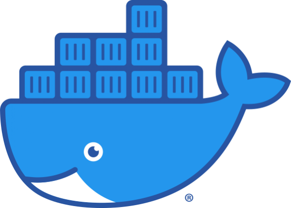

Principales Herramientas para el Desarrollo de software
Node JS

Node.js es un entorno en tiempo de ejecución multiplataforma, de código abierto, para la capa del servidor basado en el lenguaje de programación JavaScript, asíncrono, con E/S de datos en una arquitectura orientada a eventos y basado en el motor V8 de Google.
React

React es una biblioteca Javascript de código abierto diseñada para crear interfaces de usuario con el objetivo de facilitar el desarrollo de aplicaciones en una sola página. Es mantenido por Facebook y la comunidad de software libre. En el proyecto hay más de mil desarrolladores libres.
Angular

Angular es un framework para aplicaciones web desarrollado en TypeScript, de código abierto, mantenido por Google, que se utiliza para crear y mantener aplicaciones web de una sola página.
Git

Git es un software de control de versiones diseñado por Linus Torvalds, pensando en la eficiencia, la confiabilidad y compatibilidad del mantenimiento de versiones de aplicaciones cuando estas tienen un gran número de archivos de código fuente.
Jira

Jira es una herramienta en línea para la administración de tareas de un proyecto, el seguimiento de errores e incidencias y para la gestión operativa de proyectos. La herramienta fue desarrollada por la empresa australiana Atlassian.
Docker
Docker es un proyecto de código abierto que automatiza el despliegue de aplicaciones dentro de contenedores de software, proporcionando una capa adicional de abstracción y automatización de virtualización de aplicaciones en múltiples sistemas operativos.